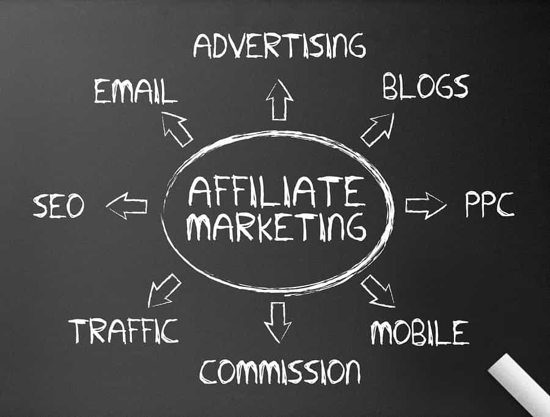

G-Freedom is an oilfield technician, writer and explorer. When not off somewhere new he's thinking, in the gym, or writing on www.artofselfhood.com


It’s probably a fair guess that many ROK readers are interested in making money online. It’s a dream that most people have, especially men who are interested in running their own affairs and being in control of their lives.
Making money on the web appeals specifically because of the level of freedom involved. The dream is to make enough to be comfortable, or maybe even rich, without someone breathing down your neck all day, and having some sense of security that if your job gets outsourced to China you will still have a means to pay the bills.
About two years ago I lost my job due to changes in the economy. I decided to start trying to make a living on the internet. I’ve now crossed the two year mark and decided to take inventory of how things have gone in the last year or so.
This is an account of the various ways I make money online. Hopefully, it will serve as a guide and help you make some decisions if you decide to follow the same path.

One of the best ways to make money online is by starting your own blog or website and selling a product to your audience. I have had some success with this through my blog on men’s self-development, selling a mini-course teaching people how to get started making money online.
This requires a fair amount of traffic to be successful. You will be converting roughly 0.5% of people, in my experience, so you need at least 100-200 visits a day before you start shifting anything on a reasonably regular basis. Even then, I can tell you from honest experience that I go weeks without a sale, then several come in a cluster, then it dries up again for a while.
That is probably a pretty low conversion rate, and to be honest I no longer put a lot of effort into this site. It maintains itself at a steady 100 or so visits a day, converting a few meager sales here and there.
I’d say this site makes me roughly $3,000 annually. That’s not a lot, and certainly not enough to live on, but if you think about it that could pay for a comfortable month backpacking in Asia or South America, or could probably cover the car payments on a reasonably priced vehicle or service some debt.
I could probably make a lot more from this site if I put in the effort, but I’m not that bothered about it right now. That’s because my energy is focused on…

Affiliate marketing is when you promote someone else’s product or service, and in exchange, you get a slice of any sales. The obvious advantage here is there is no upfront cost or effort involved in research and development or production. Someone else has done the legwork, and you are acting as a marketer on their behalf. The downside here is that literally EVERYONE is doing it if there is money to be made. Distinguishing yourself and standing out is a major battle, and one which (in a competitive enough niche) will actually be tougher than a day job.
You will need to pick a niche and work on it like crazy. I picked online casino reviews, which is one of the toughest markets you could possibly enter, and it has taken over a year just to yield results. That said, this is a market where the average affiliate makes $10,000 + per month, and super affiliates can earn $100,000+.
I’ll let you in on the fact that I am nowhere near either level, but I am seeing an upward trend in my traffic and after a long and drawn out schooling period, am hopeful that things are going to become profitable soon. Whatever you decide to get into with regards affiliate marketing, my experience so far has taught me – the more niche you can make your site, the better. A broad, general site covering a vast array of general topics will not cut the mustard. Too many people are doing it. If you want to make money, you are going to have to specialize.
Tip: If you are in an extremely competitive niche and can’t get your site ranked on Google, don’t forget that real-world marketing techniques like flyering, mail advertising, and cold calling can also work for online business.
If you have a skill like website design, writing, programming, or sales, there is absolutely no need for you to ever enter an office environment again.
It took me roughly 8-9 months to build a big enough business that I could live off the income I was generating, but after a couple of years I can now clear roughly $4,000 per month, and that’s working around 25-30 hours per week. I realize this isn’t a huge amount of money by any means, but it’s a start, and there are many people willing to put in more hours who clear $10k per month easily doing freelance work online.
This is something I do not recommend getting involved in unless you a) have about one year’s money stashed away or b) are willing to work to build a reputation on some of the big freelancing platforms alongside your day job which pays the bills. It will be tough to start, but with a little perseverance and good work ethic, you will begin to make money.
Service businesses are not passive income in any way, shape, or form, and you will end up having to work at this like you would a normal job. The difference is you can do so from your couch, or a cafe, or wherever you want as long as there is an internet connection and you can upload files.
I’ve personally met someone who makes $150 on average per day researching keywords for firms which want to make their online presence known, and conducting competitor analysis. He spends his time traveling around Thailand and Southeast Asia having a whale of a time meeting hot ladies and visiting beautiful places, and does about three hours of work per day.
Much more is available if you put your back into it. The sky is the limit as far as I can see, and the only thing which stops me from making more money is my insistence on taking lots of time to read, lift weights, and travel.
So, in summary, year two has been good for me. I have built my online revenue streams up to the point where I am making $4000-$5000 per month profit, and I feel that this can easily double, then double again in the coming years.
What can you take from this? Whatever you wish. I just wanted to report my experiences. I have no doubt some people will be inspired, some will dismiss what I am saying, and some won’t give a damn. Either way, I hope you have enjoyed this article on making cash online. If you are interested or have any questions, drop a comment and I’ll do my best to answer.